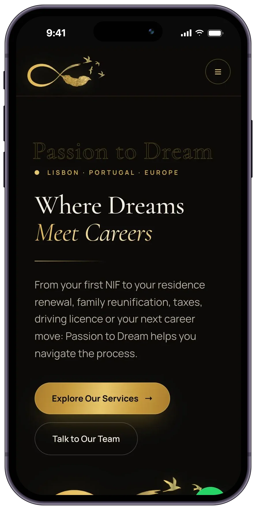
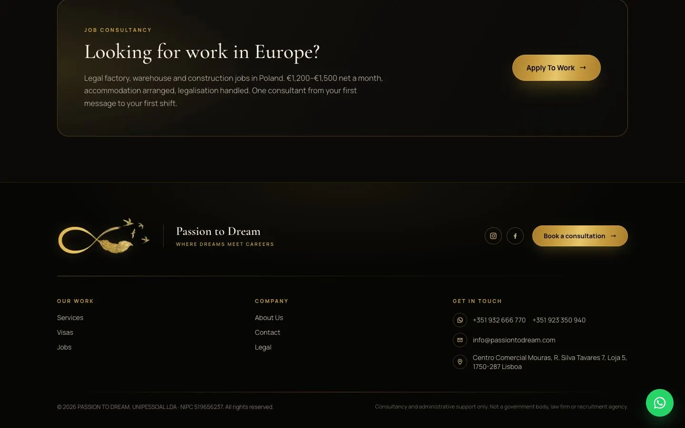
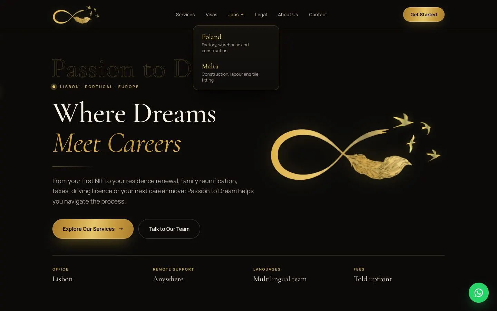

Passion to Dream
Black-and-gold consultancy site with a serif, editorial voice.
A Lisbon consultancy that guides people through NIF, residence renewal, family reunification and work placement in Europe.
Visit passiontodream.com

Design decisions
- Palette: near-black (#0B0A09), warm cream text (#F1EBDD) and gold. Primary buttons use a gold gradient with a soft glow and secondary buttons are outlined, so each block has one obvious next step.
- Type: Cormorant Garamond for headlines, with the second line in gold italic ('Meet Careers', 'Getting help shouldn't be.'), and Manrope for body copy and the small, widely tracked gold eyebrow labels.
- The gold infinity-and-feather logo, with birds lifting off it, is enlarged into the hero illustration. Above the eyebrow the brand name is set again as a faint outlined watermark.
- A four-column strip under the hero (Office, Remote support, Languages, Fees) states the practical facts as small gold labels over serif values.
- 'Why Passion to Dream' pairs a serif headline and a two-column checklist with four cards numbered in gold Roman numerals, each answering one worry about moving countries.
- The Jobs nav item opens a dropdown card with Poland and Malta, each a serif name over a one-line list of job types. A green WhatsApp button stays fixed in the corner, the one colour outside the palette, so it is always easy to find.
- Mobile: the nav collapses to a round gold-outlined menu button, the two hero buttons stack, and the watermark and logo illustration scale down with the column.
On a phone
The flow, step by step


Further down the page